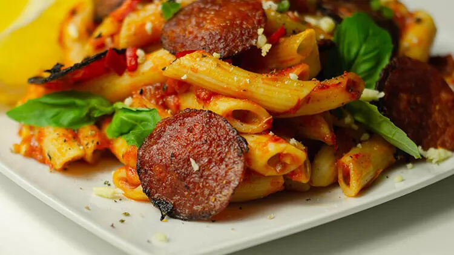

Sucuklu Makarna Tarifi
Sucuk genelde kahvaltılarda tüketilir ancak ana yemekler için de çok iyi bir alternatiftir. Hele ki hızlıca bir şeyler hazırlamanız gerekiyorsa ve evde çok fazla malzemeniz de yoksa, makarnayla birleştirip nefis bir öğün elde edebilirsiniz. İftarda da sahurda da zevkle yiyeceğiniz sucuklu makarna tairfimizi bu şekilde düşünerek hazırladık. Beğeneceğinize eminiz. Afiyet olsun…
Tarif : Adem Yıldız
Nerede Yapılır : Ocakta
Kaç Kişilik : 4-6 Kişilik
Pişirme Süresi : 30-60 dk